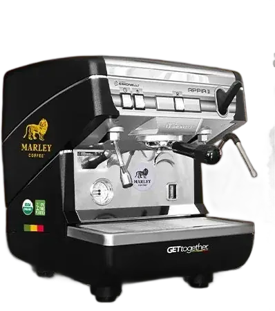

Marley Coffee · Empresas · Hoteles

¿Máquina para hotel?
¿Qué equipamiento de café necesita un hotel?
Organiza el servicio según ocupación, desayunos, consumo observado y reposición.
Arma tu propuestaTu oferta · Hoteles
¿Qué pack de partida puedes revisar?
A tu ritmo, del desayuno al evento. La máquina Marley se presta en comodato.
Ver máquina, productos y precios
Bar
Espresso profesional con molinillo
100 a 400 tazas al día
En comodato: Marley presta la máquina y tú compras los insumos. Modelo, mínimo mensual y condiciones a confirmar con tu ejecutivo.
Productos del pack
 Café en grano orgánico8 × 907 g$447.920 neto
Café en grano orgánico8 × 907 g$447.920 neto Leche20 × 500 g$185.000 neto
Leche20 × 500 g$185.000 neto Chocolate10 × 1 kg$169.900 neto
Chocolate10 × 1 kg$169.900 neto Azúcar y stevia en sobresFormato a confirmar$58.000 neto
Azúcar y stevia en sobresFormato a confirmar$58.000 neto- Revolvedores y servilletasFormato a confirmar$32.000 neto
- Vaso 9 + tapa500 de cada uno$94.000 neto
Referencia: la cotización completa de Marley del 19-oct-2026, con todas las líneas, suma $1.491.220 neto con kit y filtro.
Condiciones a confirmar
- Compra mínima mensual: a confirmar.
- Plazo de entrega: a confirmar.
- Compatibilidad de insumos con la máquina: a confirmar.
Precios netos referenciales, de la cotización de Marley del 19-oct-2026. Los confirma tu ejecutivo.
¿Cómo evalúas y comparas una solución para hoteles?
Define los momentos de servicio y contrasta la demanda con registros del hotel. Compara puntos de servicio, horarios punta, equipo, reposición y operación.
Ver el método de evaluación
Ver los pasos de evaluación
- Define los momentos de servicio: Distingue desayuno, reuniones y otros puntos donde se sirven bebidas.
- Estima la demanda: Usa ocupación y consumo observado; no conviertas un escenario hipotético en una previsión.
- Revisa operación e higiene: Confirma espacio, personal, limpieza, reposición e instrucciones del fabricante y reglas aplicables.
Compatibilidad, disponibilidad, servicios, soporte y condiciones comerciales se confirman para cada operación en una propuesta.
Ver los puntos de comparación
| Servicio | Desayuno, reuniones y puntos de autoservicio. |
|---|---|
| Demanda | Ocupación, horario punta y consumo observado. |
| Operación | Equipo, insumos, reposición, limpieza y responsables. |
¿Qué preguntas conviene resolver antes de elegir?
Revisa demanda de desayuno, capacidad del equipo y necesidades de reuniones.
Ver preguntas y guías relacionadas
Ver preguntas y respuestas frecuentes
¿Cómo calculo el café para el desayuno de un hotel?
Multiplica huéspedes que desayunan por tazas estimadas por persona y contrasta con los registros reales del establecimiento.
¿La máquina puede atender una hora punta?
Pide la capacidad del modelo y compárala con tu volumen concentrado, la carta y el flujo del desayuno.
¿El servicio considera café para reuniones?
Detalla cada punto de servicio y su demanda; disponibilidad y condiciones se confirman en la propuesta.